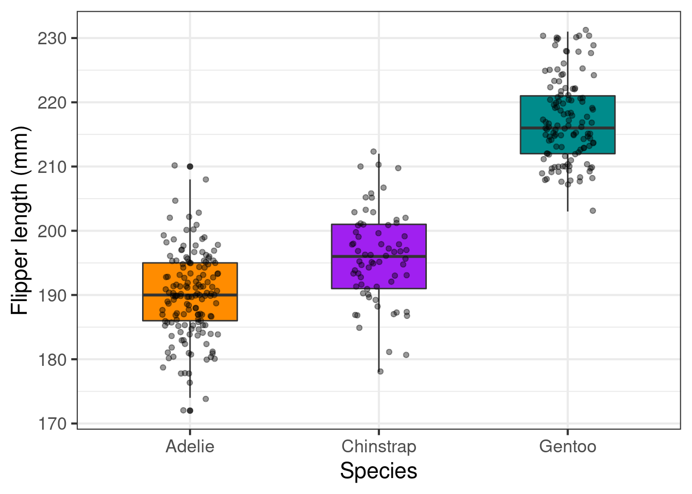

6.8 5. Erros comuns dos usuários do ggplot2 e como evitá-los
Abaixo, apresentamos uma lista não exaustiva dos erros mais comuns que cometemos (e vimos muitos usuários cometerem) ao fazer gráficos no ggplot2:
Utilizar ajuste manual nas funções
scale_shape_manual(),scale_color_manual()ouscale_fill_manual()sem indicar no argumentoaes()as variáveis que devem definir cada um desses elementos gráficos.Definir a cor ou preenchimento de um geom dentro do
aes()global (ggplot(aes(color = "black¨)) quando no fundo essa definição deveria ser dento do geom (geom_point(color = "black").Utilizar ajuste manual na função
scale_size_manual()indicando uma variável categórica ao invés de numérica.Número de cores indicadas como valores no
scale_fill_manual()ouscale_color_manual(): ao definir as cores de maneira personalizada (ou seja, não usando o padrão da função) é muito comum utilizarmos o número de cores usados por algum tutorial ou livro. Com frequência, o exemplo seguido e seus dados não possuem o mesmo número de cores. Deste modo, você pode usar comando no R para ajudar a quantificar o número de cores necessárias. Por exemplo, para os dados penguins, o comando a seguir indica o número de cores necessárias:length(levels(penguins$species)). Assim, será necessário indicar três cores diferentes dentro da funçãoscale_().Função
geom_smooth(): como falado acima, a funçãogeom_smooth()é muito útil (e simples) para gerar as linhas de ajuste (best fit) típicas de modelos lineares e não lineares. Porém, fique alerta que ao usar, por exemplo,geom_smooth(method = lm), o modelo linear utilizado para testar sua predição foi olm(). Se tiver utilizadoglm()ougam()o ajuste deve ser produzido a partir desses modelos.Uso incorreto da classe das variáveis: neste caso, o usuário utilizar uma variável numérica (por exemplo, 1, 2 e 3) como variável categórica. Neste caso, é preciso transformar a variável numérica em variável categóricas (antes de fazer o ggplot2 ou dentro do
aes()). Veja exemplos abaixo:
penguins %>%
ggplot(aes(x = year, y = bill_length_mm))+
geom_boxplot() +
theme_bw()+
labs(title = "Figura incorreta")
penguins %>%
ggplot(aes(x = factor(year), y = bill_length_mm))+
geom_boxplot() +
theme_bw()+
labs(title = "Figura correta com transformação interna")
penguins %>%
mutate(year_f = as.factor(year)) %>%
ggplot(aes(x = year_f, y = bill_length_mm))+
geom_boxplot() +
theme_bw()+
labs(title = "Figura correta com transformação prévia")